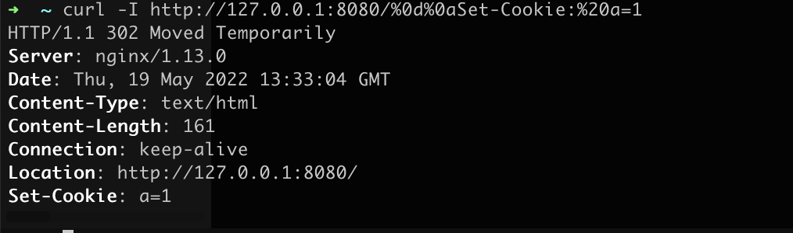
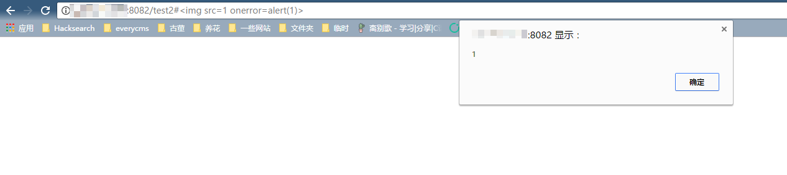

Nginx Misconfiguration Vulnerabilities¶
Nginx is a web server that can be used as a reverse proxy, load balancer, mail proxy, and HTTP cache. This environment contains three vulnerabilities caused by Nginx misconfiguration.
Environment Setup¶
Execute the following command to start a Nginx server with multiple vulnerabilities:
docker compose up -d
After successful execution, Nginx will listen on three ports: 8080/8081/8082, corresponding to three different vulnerabilities.
Mistake 1. CRLF Injection Vulnerability¶
Nginx decodes $uri, which means inputting %0d%0a can introduce line breaks, leading to CRLF injection vulnerabilities.
Example of incorrect configuration (originally intended to redirect HTTP requests to HTTPS):
location / {
return 302 https://$host$uri;
}
Payload: http://your-ip:8080/%0d%0aSet-Cookie:%20a=1, which can inject a Set-Cookie header.

Using techniques from the article "Bottle HTTP Header Injection Vulnerability Analysis", you can construct an XSS vulnerability:

Mistake 2. Directory Traversal Vulnerability¶
When configuring aliases in Nginx, forgetting to add a / will create a directory traversal vulnerability.
Example of incorrect configuration (originally intended to allow users to access files in the /home/ directory):
location /files {
alias /home/;
}
Payload: http://your-ip:8081/files../, successfully traversing to the root directory:

Mistake 3. add_header Override¶
The add_header directive in Nginx configuration child blocks (server, location, if) will override HTTP headers added by add_header in the parent block, potentially creating security risks.
For example, in the following code, CSP headers are added site-wide (in the parent block):
add_header Content-Security-Policy "default-src 'self'";
add_header X-Frame-Options DENY;
location = /test1 {
rewrite ^(.*)$ /xss.html break;
}
location = /test2 {
add_header X-Content-Type-Options nosniff;
rewrite ^(.*)$ /xss.html break;
}
However, because the /test2 location block adds an X-Content-Type-Options header, all add_header directives in the parent block become ineffective:

XSS can be triggered:
